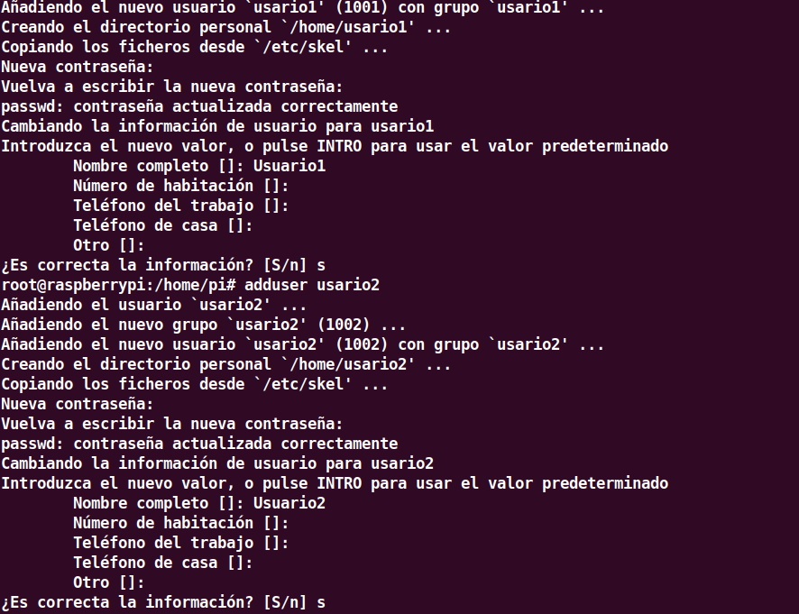
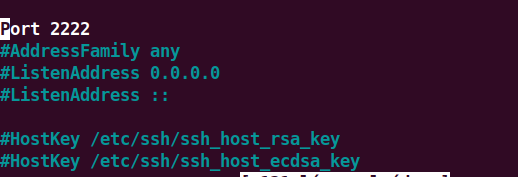
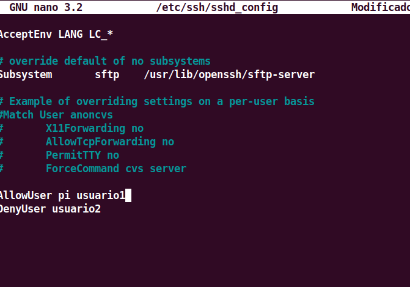
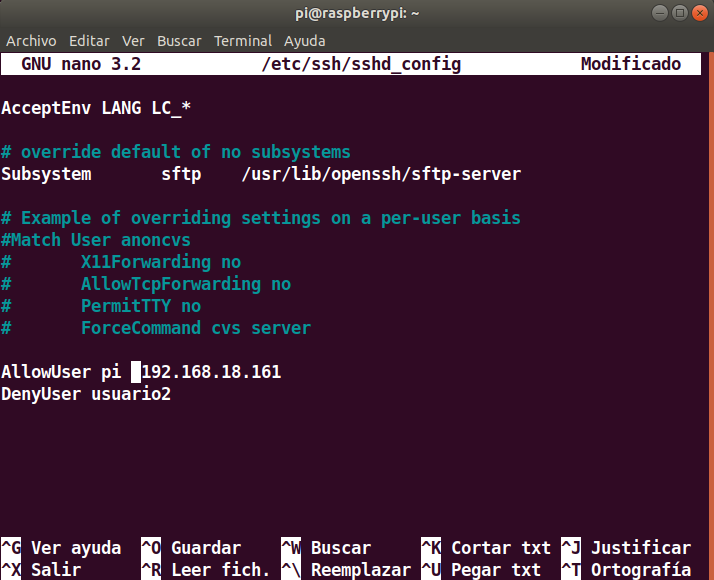
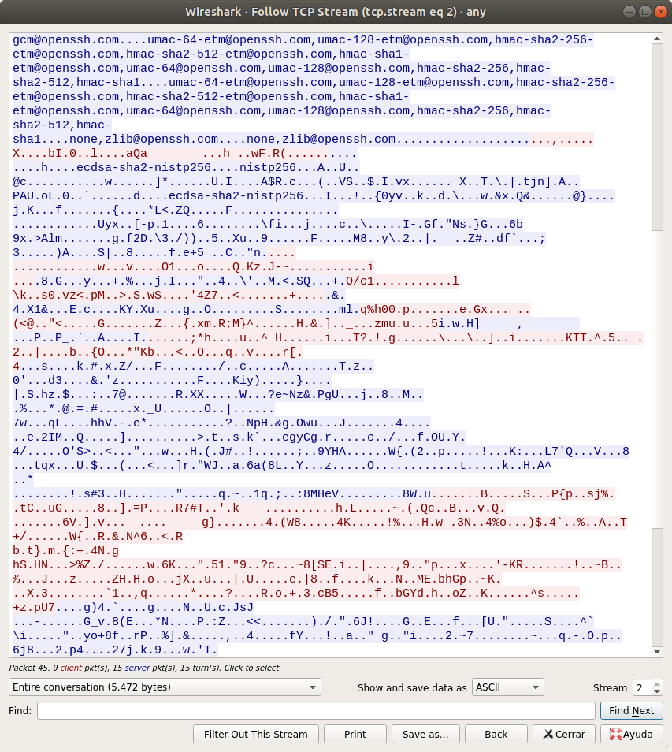
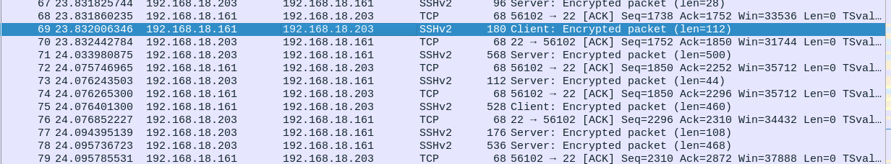

Para empezar a utilizar ssh debemos haberlo instalado en le equipo y comporbar que lo tenemos instalado, como veremos en la siguiente foto yo ya lo tengo instalado y comprobado ya que vemos que el puerto 22 esta abierto,que es el puerto ssh.

Ya podremos conectarnos por medio de ssh a cualquier dispositivo disponible, en este caso nos conectamos a una raspbery pi y crearemos dos usuarios con el root
Ahora probaremos a cambiar el puerto con el que nos conectamos mediante ssh, para ello nos debemos meter en el fichero /etc/shh/shhd_config y cambiarlo ahí
Ahora en el mismo fichero podemos decidir que usuarios queremos que se conecten y cuáles no, en este caso le daremos prioridad al usuario1 y al usuario administrador, al usuario2 no le dejaremos conectarse
Ahora cambiaremos para que solo se pueda conectar con una única ip
Por último con un sniffer llamado "Wireshark" comprobamos que la contraseña va encriptada y vemos las capas que tiene esta conexión
 